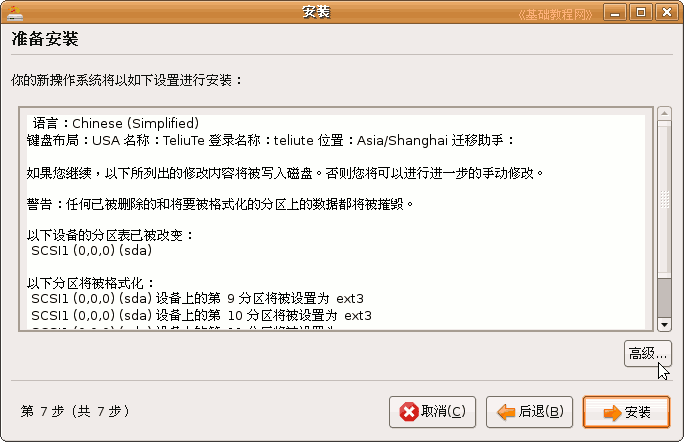
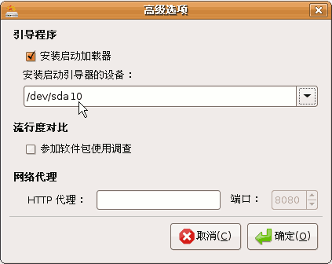
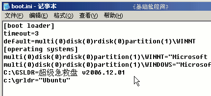

Ubuntu安装基础教程
作者：Teliute 来源：基础教程网
十二、grldr引导 返回目录 下一课对于安装有XP的双系统，最好使用grldr来引导ubuntu，下面我们来看一个练 习
1、安装grub到 /boot 分区
1）在安装ubuntu到第7步准备复制文件时，点右下角的“高级”按钮；

2）在出来的安装引导器对话框中，选择 /boot所在的分区；

3）点“确定”返回后，继续安装，由于/boot分区并不是主分区，也没有激活标志，因此不能自己启动，还需要grldr引导器来加载；
2、下载grldr
1）grldr是grub4dos的一个组件，可以解压grub4dos后，复制其中的grldr，下载地址：
http://download.gna.org/grub4dos/
2）将grldr文件复制到C:盘根目录中，8.04 版本再复制Ubuntu系统中的/boot/grub/menu.lst文件到C:盘根目录；
3）修改boot.ini文件，在最后添加一行：C:\grldr="Ubuntu"

编辑boot.ini文件的方法，请参考：http://teliute.org/win/TeComput/lesson33/lesson33.html
4）8.10 的版本不用复制 menu.lst ，其他分区根目录也不要放置 menu.lst，让 grldr 自己搜索，
如果复制了，要把里面的 uuid xxxxxxxx-xxxx 一行删除，改成 root (hdx,y) 其中的 x,y ，就是前面安装引导器的分区，比如这儿是 root (hd0,9)
查找 /boot 分区，可以打开 /etc 文件夹，查看里面的 fstab 文件，注意不要修改它；
5）重启动后在XP启动菜单那儿选择ubuntu即可；
本节学习了XP双系统中用 grldr 引导 Ubuntu 的基本方法，如果你成功地完成了练习，请继续学习下一课内容；本教程由86团学校TeliuTe制作|著作权所有
基础教程网：http://teliute.org/
美丽的校园……
转载和引用本站内容，请保留版权信息和本站链接。